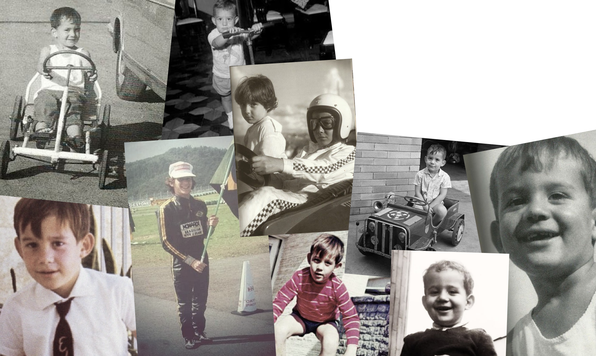
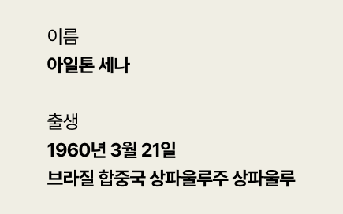
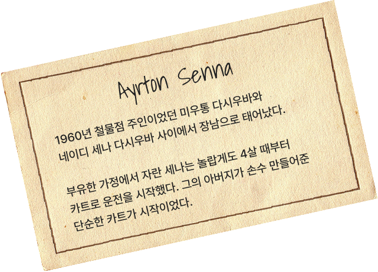
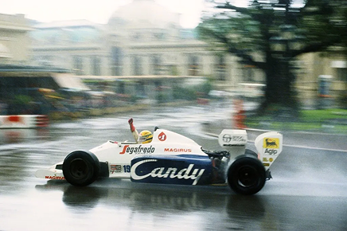

1984년 톨먼에서 F1 데뷔

폭우 속에 시작된 1984 모나코 그랑프리
폴시트는 알랭 프로스트, 세나는 13위에서 출발했지만 폭우 속에서 놀라운 페이스를 보여주며 순위를 빠르게 끌어올린다. 거센 빗줄기 속에서도 카트를 몰던 어린 시절처럼, 그는 물살을 가르며 앞차들을 하나씩 추월해 갔다.
레이스는 결국 중단되었지만, 세나는 2위라는 결과 이상으로 팬들과 관계자들에게 강렬한 인상을 남겼고, 이 경기를 계기로 ‘비의 사나이’라는 별명이 본격적으로 자리잡기 시작했다.
“He's not about to be World Champion this year, he will undoubtedly be World Champion in the future.” – 제임스 헌트, 1984 모나코 GP 해설 중